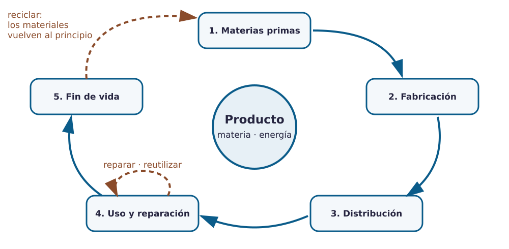

Contenido
Qué vas a aprender
Que un producto tiene una vida: nace de unas materias primas, se fabrica, se transporta, se usa y acaba en algún sitio. Vas a analizar esa vida en un objeto real y a descubrir dónde se decide que un producto sea bueno o malo para las personas y para el planeta.
El ciclo de vida de un producto
Cuando compras un objeto solo ves un momento de su historia. Antes hubo minas, campos o pozos de petróleo, fábricas, camiones y almacenes; después habrá reparaciones (o no), un contenedor y, con suerte, un reciclaje. Ese recorrido completo se llama ciclo de vida y tiene cinco fases:

| Fase | Qué ocurre | Impacto típico | Ejemplo: botella de plástico |
|---|---|---|---|
| 1. Materias primas | Se extraen y preparan los materiales. | Consumo de recursos, energía, agua; daño al entorno de donde se extraen. | Petróleo → plástico PET. |
| 2. Fabricación | Se transforman los materiales en el producto. | Energía, residuos de fábrica, condiciones de trabajo. | Moldeo de la botella, etiquetado, llenado. |
| 3. Distribución | Embalaje, almacén, transporte y venta. | Combustible del transporte, embalajes de un solo uso. | Palés, camiones, supermercado. |
| 4. Uso | El producto cumple su función; se mantiene o se repara. | Consumo durante el uso (energía, recambios); duración real. | Se bebe una vez… o se rellena muchas. |
| 5. Fin de vida | Se tira, se reutiliza, se recicla o se recuperan materiales. | Vertedero, contaminación; o materiales que vuelven al ciclo. | Contenedor amarillo → nuevo PET, o el suelo del patio. |
Lineal o circular
Si el ciclo termina en el vertedero, hablamos de economía lineal: extraer, fabricar, usar, tirar. Si el producto está pensado para durar, repararse y, al final, convertirse en materia prima de otro, hablamos de economía circular. La diferencia se decide sobre todo en la fase de diseño: un objeto pegado con adhesivo no se puede reparar; uno atornillado, sí.
Las erres, por orden de importancia
Rechazar lo que no hace falta · Reducir material y energía · Reutilizar el objeto para lo mismo u otra cosa · Reparar antes que sustituir · Reciclar los materiales cuando ya no hay más remedio. Reciclar va la última: también consume energía.
Demanda, evolución y final: el ciclo comercial
Además de la vida física, un producto tiene una vida en el mercado: se lanza (pocas ventas, mucha publicidad), crece (todo el mundo lo quiere), madura (ventas estables, muchos competidores) y declina (aparece algo mejor o cambia la moda). Los fabricantes intentan alargar la fase de madurez con versiones nuevas, colores o accesorios; o, al revés, acortarla para que compres otro.
| Tipo de obsolescencia | Qué es | Ejemplo |
|---|---|---|
| Programada | El producto se diseña para fallar o dejar de servir en un plazo. | Batería que no se puede cambiar. |
| Percibida | Sigue funcionando, pero «parece viejo». | Móvil de hace dos años con la cámara «antigua». |
| Tecnológica | Deja de ser compatible con lo nuevo. | Cargador con conector que ya no se fabrica. |
Un análisis con criterio ético e inclusivo
Analizar un producto no es solo mirar de qué está hecho. También hay que preguntarse a quién sirve y a quién deja fuera: ¿lo puede usar una persona con movilidad reducida, con poca vista, zurda, mayor, con pocos recursos? ¿Quién lo fabricó y en qué condiciones? ¿El precio incluye lo que cuesta deshacerse de él? Un producto bien diseñado responde bien a esas preguntas; uno mal diseñado las esquiva.
Ejemplo: análisis rápido de un aparcabicis de acero
Materias primas: acero (mineral de hierro + carbón, mucha energía) y zinc para galvanizar. Fabricación: corte, curvado y soldadura; galvanizado en caliente. Distribución: pesado, pero se apila bien. Uso: décadas sin mantenimiento si está galvanizado; accesible si deja espacio entre soportes para maniobrar. Fin de vida: el acero se recicla casi al 100 %. Demanda: creciente con el uso de la bici y el patinete. Veredicto: mucho impacto al principio, muy poco después; producto lineal en origen pero circular al final. Mejora posible: acero reciclado y anclajes desmontables para reubicarlo.
Ahora inténtalo
Actividad 6 · Análisis de ciclo de vida de un producto
Cada persona del equipo analiza un producto real que ya intente resolver la necesidad elegida (si el equipo eligió las bicis: un aparcabicis comercial; si eligió la sombra: una pérgola o un toldo). Si la necesidad admite varios productos, repartidlos.
- Rellena la ficha de análisis de producto: las cinco fases, la demanda y evolución, la obsolescencia, a quién sirve y a quién deja fuera, y un veredicto con una mejora.
- Escribe con precisión: materiales con nombre, procesos con nombre, datos que hayas podido comprobar. Lo que no sepas, indícalo como suposición.
- La conclusión de las fichas del equipo se resume después en el dossier (apartado 3).
Crear mi copia de la ficha de análisis de producto (se guarda en tu Drive).
Entrega en Moodle
Tarea Análisis de producto. Archivo: analisis_producto.pdf. Individual. Exporta tu ficha a PDF y súbela.
Lista desordenada
Ordena las fases del ciclo de vida de una botella reutilizable de acero.
- Extraer el mineral de hierro y fabricar el acero
- Conformar la botella, soldar y pulir en la fábrica
- Embalar, transportar y vender
- Usar durante años, lavar y cambiar la junta del tapón
- Recoger y reciclar el acero para otra pieza